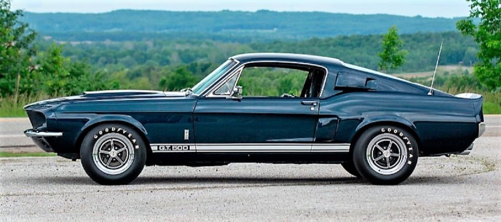
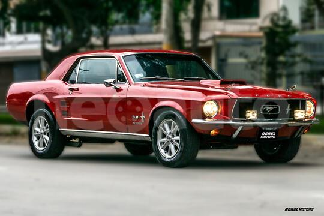

Historia
El Mustang Shelby es una de las leyendas automovilísticas más arraigadas en el gusto de los entusiastas de los autos deportivos. Conoce, en esta línea del tiempo de Ford Mustang Shelby, los diseños, rediseños y homenajes en el cine, la historia y evolución del Muscle Car Americano más famoso y amado por todo el mundo.Los automóviles de 1965-1966 fueron los más pequeños y ligeros de los modelos GT 350. Estos a menudo se llamaban "Cobra", que fue el coche deportivo de dos asientos AC Cobra también producido por Shelby American durante el mismo período. Ambos modelos usaban el emblema Cobra, un esquema de pintura similar y la cubierta opcional de la válvula "Cobra" en muchos GT350, que formaban parte de un vínculo comercial de Shelby, así como uno de sus símbolos icónicos.
sacado de : https://co.pinterest.com/pin/613474780473048568/
En 2009, el Super Snake (1967) de Carroll Shelby tuvo una actualización para el GT500. Este modelo llegó a tener 605 Caballos de Fuerza, además de algunas modificaciones de rendimiento y estética.El G.T. 350 de 1965 no fue construido para la comodidad o la facilidad de conducción. Hubo 34 coches de carreras "G.T. 350R" diseñados específicamente para uso en competencias bajo las reglas de SCCA y el modelo fue el campeón de B-Production durante tres años consecutivos, El G.T. 350 de 1966 mostraba más comodidad a los conductores ocasionales que incluían asientos traseros, colores opcionales y una transmisión automática opcional. Esta tendencia de las características adicionales continuó en los años siguientes, con los automóviles cada vez más grandes, más pesados y más cómodos, al tiempo que perdían gran parte de su competitividad en el proceso
sacado de : https://neoauto.com/auto/usado/ford-mustang-1967-1645559
2010 fue un año especial para Ford Mustang, pues toda la línea recibió un rediseño. En este año, el GT500 renovó el capó, nariz y parrilla. Además de tener sustanciales mejoras del tren motriz tomadas de la reedición del KR. La potencia aumentó de 500 a 540 Caballos de Fuerza.El 1965 y 1966, los G.T. 350s fueron entregados en la planta de montaje de San José de Ford en forma cuerpo en blanco para su modificación por la operación de Carroll Shelby, El único año en que los Shelby Mustang de la década de 1960 provino de otra planta fue 1968, donde vinieron de Nueva Jersey, "T" en el VIN y fueron modificados por A.O. Herrero.
sacado de : "https://www.mackeyvintage.com/stock/1967-ford-mustang-shelby-gt350-coupe/7"
Coches notables para 1967 incluían:
- 0100, el primer G.T. 500 construido.
- 0131, el único Shelby G.T. coupé built ("Little Red"), que fue el precursor del California Special de 1968
- 0139, el único, Nota: los automóviles 0100, 0131 y 0139 fueron el primer gran bloque Shelby G.T. Coches ordenados y construidos.
- One 1967 Fastback se actualizó con un G.T. 500 equipado con un motor de carreras 427 FE GT40 produciendo 650 HP (659 CV; 485 kW) y fue conocido como el "Super Snake".
tomado de : "https://www.youtube.com/embed/ILZIbFBwiDU"
Segunda generacion (2005-2015)
Shelby junto con Paxton también diseñaron una nueva variante basada en el Mustang con motor V6. Las modificaciones incluyen un motor sobrealimentado que produce 350 HP (355 CV; 261 kW). Tenía ruedas de 20 pulgadas (50,8 cm) con el nombre de Shelby y el apodo de Cobra en cada lado y el anzuelo. La caída de suspensión de 2 pulgadas (5,1 cm), los frenos delanteros y traseros Baer / Shelby de 14 pulgadas (35,6 cm) y el frontal agresivo junto con un escape doble.
Shelby también creó el CS8, una variante V8 de 4601 cm³ (4,6 L; 280,8 plg³) del CS6. El Shelby CS6/8 no estaba disponible como versión de fábrica. Sin embargo, Shelby había hecho disponible el kit CS6/8 para la compra. Pero luego vino el contrato con Hertz GT-H y solamente un puñado de CS6/8 se construyeron, lo que los convirtió en uno de los autos más raros jamás construidos por Shelby.
Especificaciones segunda generacion
- Cuatro asientos.
- Potencia: 540 HP (547 CV; 403 kW)
- Par máximo: 510 lb·pie (691 N·m)
- Relación del diferencial de 3,73
- Llantas Alcoa de 18 x 9,5 pulgadas (45,7 x 24,1 cm) con neumáticos únicos Goodyear Eagle F1 Supercar de medidas: P 255/45 ZR18 delante y 285/40 detrás
Datos técnicos:
| Variantes y años | Código de motor | Cilindrada | Diámetro x carrera | Relación de compresión |
|---|---|---|---|---|
| GT350 19653 | Windsor | 289 plg³ (4,7 L) | 4 x 2,87 plg (101,6 x 72,9 mm) | 10,5:1 |
| GT350 196823 | 302 plg³ (4,9 L) | 4 x 3 plg (101,6 x 76,2 mm) | ||
| GT350 Supercharged 196824 | ||||
| GT350 196925 | 302 plg³ (4,9 L) | 4 x 3 plg (101,6 x 76,2 mm) | ||
| GT500 196726 | FE-series Cobra Jet | 427 plg³ (7 L) | 4,13 x 3,984 plg (104,9 x 101,2 mm) | |
| GT500 KR 196827 | 11,6:1 |
tomado de: http://www.sonidosmp3gratis.com/